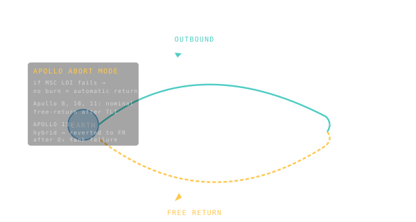

Free-Return Trajectory
A trajectory that swings past the destination and bends gravity itself into a return ticket — no engine burn required.

101 · zoom in
Imagine you're flying to the Moon. You're worried — what if the engine fails on the way? You'd be stranded, drifting forever. Here's the genius answer: pick a path where, even if every engine on your spacecraft dies the moment you leave Earth orbit, gravity alone will swing you around the Moon and toss you back home automatically. That's a free-return trajectory.
It's an actual figure-8 in space. You leave Earth, climb out to the Moon, the Moon's gravity bends your path 180 degrees, and you fall back toward Earth, hitting the atmosphere on the rebound. No engine required. The Moon does all the work. The geometry just has to be right.
Apollo 8 was the first crewed mission to fly one. Apollo 13 — the famous "Houston, we have a problem" mission — owes its survival to it. When their main engine became unusable, they drifted around the Moon on a free-return and came home. Orrery's default /fly scenario does exactly this for Mars: Earth → Mars flyby → Earth, no mid-course burns required. The cheapest possible Mars trip you can fly with humans on board.
The headline trick: leave Earth, fly past the Moon (or Mars), and let the gravity of that body bend your path back toward Earth. If you got the geometry right, you re-enter Earth's atmosphere on the rebound. The crew never has to fire an engine to come home.
Apollo 8 was the first crewed free-return. Apollo 13 famously fell back on the technique when its service module crippled, riding the figure-8 home. For Mars the geometry is harder — you need a 500-day, two-pass loop — but the concept is the same: flyby geometry doing the work of the return burn.
Orrery's default `/fly` scenario, ORRERY-1, is exactly this: Earth-Mars-Earth on a free-return arc, no mid-course corrections, no orbit-insertion burn at Mars. You watch the spacecraft loop the Sun once, swing past Mars, and come back. It's the cheapest crewed Mars flyby ever proposed.